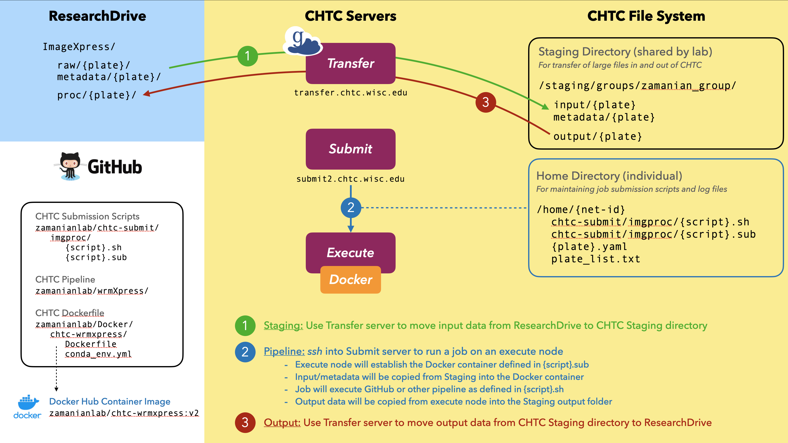

Server Pipelines
Our lab has access to powerful computing resources and support through the Center for High-Throughput Computing (CHTC). Our core bioinformatics and image processing pipelines will be deployed through CHTC servers. All pipelines will be maintained on GitHub and associated with Docker environments to ensure reproducibility. Many of our pipelines will use Nextflow.
In general, pipelines will be run in three steps:
- Staging: input files will be transferred to the CHTC server from lab storage
- Pipeline: files will be processed using established pipelines
- Output: desired outputs will be transferred from the CHTC server to lab storage
A. Center for High-throughput Computing (CHTC)
Consult official CHTC and HTCondor documentation before getting started. Register for an account using this form.

The HTC System
-
Execute (Compute) nodes
The CHTC has an extensive set of execute nodes. To establish priority access for certain pipelines, our lab has secured a prioritized node that can be accessed on-demand using a designated flag.
- Typical nodes: 20 cores, 128 GB RAM
- High-memory nodes: e.g., 80 cores, 4 TB RAM
- Dedicated lab node: 40 cores (80 hyperthreading), 512 GB RAM, 3.8 TB HD
-
Submit nodes
Jobs on the CHTC are deployed from submit nodes. You can
sshinto our assigned submit node (submit2) to run and monitor jobs using your UW net-id and password.ssh {net-id}@submit2.chtc.wisc.eduNote: If you correctly updated your
~/.bash_profileby following the macOS environment setup instructions, then you can use the simplesubmittosshinto the node. -
File system
Each net-id is associated with a
homefolder, where we manage job submission scripts. Our lab also has a sharedstagingfolder, for transfer of large files in and out of the CHTC system. The CHTC does not use a shared file system, but you can request the storage you need for any given job./ ├── home/{net-id}/ [quota: 20 GB, submit script dir] └── staging/groups/zamanian_group/ [quota: 1 TB | 100 files] └── input/ [input dir: unprocessed (raw) data] └── output/ [output dir: processed job outputs] └── WBP.tar.gz [permanent storage of WBP data]
Deploying Pipelines
-
Staging - transfer input data for processing (ResearchDrive -> CHTC)
1A. Globus transfer
In almost all cases, you will use Globus to transfer your input data from ResearchDrive to the CHTC staging input folder. Globus is the fastest and most secure transfer method, and allows for transfer from any file system that has a Globus endpoint installed. Most raw data on ResearchDrive is unarchived and uncompressed. However, our pipelines expect a single archived folder (.tar) as input and will deliver a single archived folder as output. Use the workflow below to transfer an unarchived folder on ResearchDrive to CHTC input and archive it after arrival. See the KB for further instructions and necessary preparations for initiating your first transfer.
Globus transfer
- Login to the Globus web interface with your NetID
- If transferring from a personal computer, install and start Globus Connect Personal.
- If transferring from ResearchDrive, first create a kerberos ticket by running the command
ssh [netid]@doit-rci- 00025.doit.wisc.edu. - In the web interface, set the view to two panels using the icon on the top right.
- On one side of the interface, click Collection and choose the desired endpoint (
chtc#staging,wisc-drive, or your personal computer). - Choose the other endpoint for the other side of the interface.
- Type
/staging/groups/zamanian_group/into the Path box of thechtc#stagingcollection and press Enter (you may be required to login with your NetID again). Use/mnt/researchdrive/mzamanian/forwisc-drive. - Navigate to the desired directories.
- Drag and drop files to transfer them; you will receive an email upon transfer completion.
- Exit the SSH once finished transferring to/from ResearchDrive.
- Login to the transfer server and archive the directories in
input/andmetadata/with the commandtar -cvf {plate}.tar {plate}. - Delete the original, unarchived directories.
1B. Command line transfer with smbclient
It is also possible to transfer via smbclient using the terminal. The following code will also archive the data upon arrival.
ResearchDrive -> CHTC transfer of unarchived raw data folder (archived on arrival)
# Log into transfer server and navigate to staging input dir ssh {net-id}@transfer.chtc.wisc.edu cd /staging/groups/zamanian_group/input/ # Example of transferring sequencing data smbclient -k //research.drive.wisc.edu/mzamanian/ -D "UWBC-Dropbox/Bioinformatics Resource Center" -Tc 201105_AHLVWJDSXY.tar "201105_AHLVWJDSXY" # Example of transferring ImageXpress data smbclient -k //research.drive.wisc.edu/mzamanian/ -D "ImageXpress/raw" -Tc 20201118-p01-MZ_172.tar "20201118-p01-MZ_172.tar"ResearchDrive -> CHTC transfer of unarchived metadata folder (archived on arrival)
# Log into transfer server and navigate to staging metadata dir ssh {net-id}@transfer.chtc.wisc.edu cd /staging/groups/zamanian_group/metadata/ # Example of transferring ImageXpress metadata smbclient -k //research.drive.wisc.edu/mzamanian/ -D "ImageXpress/metadata" -Tc 20201118-p01-MZ_172.tar "20201118-p01-MZ_172"Note: If you correctly updated your
~/.bash_profileby following the macOS environment setup instructions, then you can use the simpletransfertosshinto the node.For ImageXpress data, an entire experiment may include >10 plates that will take hours to days to transfer. To facilitate batch transfers, we have included two scripts in the
input/andmetadata/directories of/staging/groups/zamanian_group/to help with batch transfer.Batch transfer via custom scripts and
screen- Use a terminal text editor (e.g.,
vimornano) to edit the plate list in/staging/groups/zamanian_group/input/plates.txtsuch that there is a single plate name per line. Also include a blank line at the end of the file. - Use the commands
sh transfer_images.sh(from theinput/directory) andsh transfer_metadata.sh(from themetadata/directory) to transfer the images and metadata, respectively. - Use the
screentool to maintain a continuous process in the background, allowing you to close your SSH session.
1 2 3 4 5 6 7 8 9 10 11 12 13 14 15 16
# Log into transfer server and navigate to staging input dir ssh {net-id}@transfer.chtc.wisc.edu cd /staging/groups/zamanian_group/input/ # Start a screen named 'transfer' screen -S transfer # Initiate the transfer sh transfer_images.sh # Detach from the screen by pressing Ctrl+a and then d # Reattach to the screen screen -r transfer # Close the screen exit1C. Drag-and-drop transfer
Transferring input data should be performed with Globus (1A) or background smblient processes (1B). However, smaller files such as metadata or auxiliary parameter files can be moved to the staging directory or one's home directory on the submit2 server with drag-and-drop SFTP clients such as Transmit, CyberDuck, or FileZilla.
1D. Command line transfer with
scpA final option for transfer of small files is via the
scpcommand:# transfer to staging scp [local file] {net-id}@transfer.chtc.wisc.edu:/staging/groups/zamanian_group/input/ # transfer to home scp [local file] {net-id}@submit2.chtc.wisc.edu:/home/{net-id}Warning!
Do not use options 1C or 1D for the transfer of many files or large files >100 MB, as these methods are unstable and can be unpredictable. For batch transfer or transfer of large files, the recommended method is Globus (1A).
-
Pipeline - Submit and manage CHTC jobs
CHTC uses HTCondor for job scheduling. Submission files should follow lab conventions and be consistent with the CHTC documentation. Two example submit scripts with annotations are shown below. This submit scripts (Core_RNAseq-nf.sub/wrmXpress.sub) load a pre-defined Docker environment and run a bash executable script (Core_RNAseq-nf.sh/wrmXpress.sh) with defined arguments on the execute node. Other options define log files, resource requirements, and transfer of files in/out of
home. Large files should not be transferred in/out ofhome, but you may need to transfer auxiliary files (for example, the parameters YAML file for wrmXpress jobs). We transfer in our large data through/staging/groups/zamanian_group/input/and we move job output files to/staging/groups/zamanian_group/output/within the job executable script to avoid their transfer tohomeupon job completion. The only files that should be transferred back tohomeare small log files.Example CHTC job submission scripts (.sub / .sh)
1 2 3 4 5 6 7 8 9 10 11 12 13 14 15 16 17 18 19 20 21 22 23 24 25 26 27 28 29 30 31 32 33 34
# Core_RNAseq-nf.sub # Input data in /staging/{net-id}/input/$(dir) # Run: condor_submit Core_RNAseq-nf.sub dir=191211_AHMMC5DMXX script=Core_RNAseq-nf.sh # request Zamanian Lab server Accounting_Group = PathobiologicalSciences_Zamanian # load docker image; request execute server with staging universe = docker docker_image = zamanianlab/chtc-rnaseq:v1 Requirements = (Target.HasCHTCStaging == true) # executable (/home/{net-id}/) and arguments executable = $(script) arguments = $(dir) # log, error, and output files log = $(dir)_$(Cluster)_$(Process).log error = $(dir)_$(Cluster)_$(Process).err output = $(dir)_$(Cluster)_$(Process).out # transfer files in-out of /home/{net-id}/ transfer_input_files = should_transfer_files = YES when_to_transfer_output = ON_EXIT # memory, disk and CPU requests request_cpus = 80 request_memory = 500GB request_disk = 1500GB # submit 1 job queue 1 ### END1 2 3 4 5 6 7 8 9 10 11 12 13 14 15 16 17 18 19 20 21 22 23 24 25 26 27 28 29 30 31 32 33 34
#!/bin/bash # set home () and mk dirs export HOME=$PWD mkdir input work output # echo core, thread, and memory echo "CPU threads: $(grep -c processor /proc/cpuinfo)" grep 'cpu cores' /proc/cpuinfo | uniq echo $(free -g) # transfer input data from staging ($1 is ${dir} from args) cp -r /staging/groups/zamanian_group/input/$1.tar input cd input && tar -xvf $1.tar && rm $1.tar && mv */*/* $1 && cd .. # clone nextflow git repo git clone https://github.com/zamanianlab/Core_RNAseq-nf.git # run nextflow command export NXF_OPTS='-Xms1g -Xmx8g' nextflow run Core_RNAseq-nf/WB-pe.nf -w work -c Core_RNAseq-nf/chtc.config --dir $1\ --star --qc --release "WBPS15" --species "brugia_malayi" --prjn "PRJNA10729" --rlen "150" # rm files you don't want transferred back to /home/{net-id} rm -r work input # tar output folder and delete it cd output && tar -cvf $1.tar $1 && rm -r $1 && cd .. # remove staging output tar if there from previous run rm -f /staging/groups/zamanian_group/output/$1.tar # mv large output files to staging output folder; avoid their transfer back to /home/{net-id} mv output/$1.tar /staging/groups/zamanian_group/output/1 2 3 4 5 6 7 8 9 10 11 12 13 14 15 16 17 18 19 20 21 22 23 24 25 26 27 28 29 30 31 32 33 34
# Input data: /staging/groups/zamanian_group/input/${plate}.tar # Parameters: $HOME/${plate}.yml # Run: condor_submit wrmXpress.sub script=wrmXpress.sh plate=20211105-p01-EJG_948 # request Zamanian Lab server Accounting_Group = PathobiologicalSciences_Zamanian # load docker image; request execute server with large data staging universe = docker docker_image = zamanianlab/chtc-wrmxpress:v1 Requirements = (Target.HasCHTCStaging == true) # executable (/home/{net-id}/) and arguments executable = $(script) arguments = $(plate) # log, error, and output files log = $(plate)_$(Cluster)_$(Process).log error = $(plate)_$(Cluster)_$(Process).err output = $(plate)_$(Cluster)_$(Process).out # transfer files in-out of /home/{net-id}/ transfer_input_files = $(plate).yml should_transfer_files = YES when_to_transfer_output = ON_EXIT # memory, disk and CPU requests request_cpus = 1 request_memory = 8GB request_disk = 10GB # submit a job for each directory in plate_list.txt queue plate from plate_list.txt ### END1 2 3 4 5 6 7 8 9 10 11 12 13 14 15 16 17 18 19 20 21 22 23 24 25 26 27 28 29 30 31 32 33 34 35 36 37 38 39 40 41 42
#!/bin/bash # set home () and mk dirs export HOME=$PWD mkdir input mkdir metadata mkdir output/ mkdir work/ git clone https://github.com/zamanianlab/wrmXpress.git # echo core, thread, and memory echo "CPU threads: $(grep -c processor /proc/cpuinfo)" grep 'cpu cores' /proc/cpuinfo | uniq echo $(free -g) # transfer and decompress input data from staging ($1 is ${dir} from args) tar -xf /staging/groups/zamanian_group/input/$1.tar -C input/ # deprecated # cp -r /staging/groups/zamanian_group/input/$1.tar input # cd $input && tar --strip-components 5 -xvf $1.tar && cd $HOME # transfer and decompress metadata from staging ($1 is ${dir} from args) tar -xf /staging/groups/zamanian_group/metadata/$1.tar -C metadata # deprecated # cd metadata && tar -xvf $1.tar && rm $1.tar && mv */*/* $1 && cd $HOME # run the wrapper python Core_imgproc/wrapper.py $1.yml $1 # tar output folder and delete it mv output $1 mv $1.yml $1 tar -cvf $1.tar $1 && rm -r $1 # remove staging output tar if there from previous run rm -f /staging/groups/zamanian_group/output/$1.tar # mv large output files to staging output folder; avoid their transfer back to /home/{net-id} mv $1.tar /staging/groups/zamanian_group/output/Log into submit node to submit a job,
ssh {net-id}@submit2.chtc.wisc.edu condor_submit Core_RNAseq-nf.sub dir=191211_AHMMC5DMXX script=Core_RNAseq-nf.shOther useful commands for monitoring and managing jobs
# check on job status condor_q # remove a specific job condor_rm [job id] # remove all jobs for user condor_rm $USER # interative shell to running job on remote machine condor_ssh_to_job [job id] exit -
Output - transfer output data (CHTC -> ResearchDrive)
To transfer your job output folder from the CHTC staging output directory to Research Drive, it is easist to use an SFTP client (e.g., CyberDuck, Transmit, FileZilla) to transfer the tar files to your local computer, and then from your local computer to ResearchDrive. It also possible to use the command line:
CHTC -> ResearchDrive transfer with smbclient
# log into CHTC staging server and navigate to output folder ssh {net-id}@transfer.chtc.wisc.edu cd /staging/groups/zamanian_group/output/ # connect to lab ResearchDrive smbclient -k //research.drive.wisc.edu/mzamanian # turn off prompting and turn on recursive smb: \> prompt smb: \> recurse # navigate to ResearchDrive dir for processed data (example) smb: \> cd /ImageXpress/proc/ # transfer output data folder (example) smb: \> mput 20201119-p01-MZ_200.tarOutput data can also be transferred to your computer directly from the CHTC (as shown in the command below), or from the mounted ResearchDrive if the data have already been moved to ResearchDrive.
scp -r {net-id}@transfer.chtc.wisc.edu:/staging/groups/zamanian_group/output/[dir] .
B. Docker
We will user Docker to establish consistent environments (containers) for our established pipelines. We will maintain Docker images on Docker Hub under the organization name 'zamanianlab'. These images can be directly loaded from Docker Hub in our CHTC submit scripts. The Dockerfiles used to create these images should be maintained in our GitHub Docker Repo. Install Docker Desktop for Mac and create a Dockerhub account to be associated with our organization Docker Hub (zamanianlab).
Building Docker Images
-
Create a lab Docker Hub repo (zamanianlab/{pipeline}), which is associated with a GitHub repo called {pipeline}
-
Create Dockerfile and auxillary (e.g., yaml) files in a folder with the repo name in the Docker GitHub repo.
The Dockerfile provides instructions to build a Docker image. In this case, we are starting with the official miniconda Docker image and then installing necessary conda packages into this image. You can search for existing Docker images on Docker Hub to build on, instead of starting from scratch.
Dockerfile
FROM continuumio/miniconda3 MAINTAINER mzamanian@wisc.edu # install (nf tracing) RUN apt-get update && apt-get install -y procps # install conda packages COPY conda_env.yml . RUN \ conda env update -n root -f conda_env.yml \ && conda clean -aThe following yml file lists
condapackages to be installed. You can search for packages on Anaconda cloud.conda_env.yml
conda_env.yaml name: rnaseq-nf channels: - bioconda - conda-forge - defaults dependencies: - python=3.8.5 - nextflow=20.07.1 - bwa=0.7.17 - hisat2=2.2.1 - stringtie=2.1.2 - fastqc=0.11.9 - multiQC=1.9 - fastp=0.20.1 - bedtools=2.29.2 - bedops=2.4.39 - sambamba=0.7.0 - samtools=1.9 - picard=2.20.6 - bcftools=1.9 - snpeff=4.3.1t - mrbayes=3.2.7 - trimal=1.4.1 - mafft=7.471 - muscle=3.8.1551 - seqtk=1.3 - raxml=8.2.12 - htseq=0.12.4 - mirdeep2=2.0.1.2 -
Build Docker image
cd [/path/to/Dockerfile] docker build -t zamanianlab/chtc-rnaseq . -
Test Docker image interactively
docker run -it --rm=TRUE zamanianlab/chtc-rnaseq /bin/bash ctrl+D to exit -
Push Docker image to Docker Hub
docker push zamanianlab/chtc-rnaseqSome useful Docker commands
# list docker images docker image ls (= docker images) # remove images docker rmi [image] ## remove all docker containers # run first because images are attached to containers docker rm -f $(docker ps -a -q) # remove every Docker image docker rmi -f $(docker images -q)
Testing Docker Pipelines
Before deploying a new pipeline on large datasets, test the pipeline using subsampled data. You can test locally with subsampled data, on the CHTC server with subsampled data, and finally, run the pipeline on the CHTC server with your full dataset. An example is provided below, using RNAseq data.
-
First, subsample your data into a more manageable size and store it in the staging
subsampledfolder. -
Run Docker container locally
docker run -it --rm=TRUE zamanianlab/chtc-rnaseq:v2 /bin/bash -
Simulate the steps in your submit scripts
Running commands in local Docker container
# set home to working directory export HOME=$PWD # make input, work, and output directories for nextflow mkdir input work outputs # clone GitHub repo that contains pipeline in development git clone https://github.com/zamanianlab/Core_RNAseq-nf.git # transfer sub-sampled files from CHTC staging into your input folder scp -r {net-id}@transfer.chtc.wisc.edu:/staging/groups/zamanian_group/subsampled/191211_AHMMC5DMXX.tar input # run your pipeline commands # example of a nextflow command using chtc-local.config matched to your hardware specs nextflow run Core_RNAseq-nf/WB-pe.nf -w work -c Core_RNAseq-nf/chtc-local.config --dir "191211_AHMMC5DMXX" --release "WBPS14" --species "brugia_malayi" --prjn "PRJNA10729" --rlen "150" -
Make changes to your GitHub pipeline,
pushthose changes to GitHub,pullthose changes to your local container, and re-run the Nextflow command until the pipeline is behaving as expected.